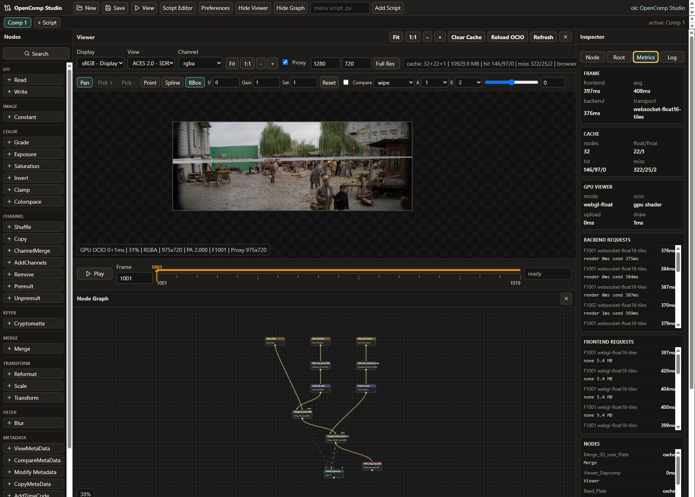

Architecture
Backend image engine, frontend GPU viewer
The backend evaluates scene-linear float frames and streams pre-display float viewer buffers. The frontend caches those buffers and uses WebGL2 to apply viewer controls and OCIO display transforms.

Data Flow
Image I/O
OpenEXR/Pillow load source frames.
OpenEXR/Pillow load source frames.
ImageFrame
float32 RGBA plus channel data and metadata.
float32 RGBA plus channel data and metadata.
Evaluator
Demand-driven graph traversal and cache signatures.
Demand-driven graph traversal and cache signatures.
Viewer Stream
float16/float32 WebSocket tiles.
float16/float32 WebSocket tiles.
WebGL2
Viewer process and OCIO display shader.
Viewer process and OCIO display shader.
Caches
| Cache | Stored Data | Purpose |
|---|---|---|
| Node cache | ImageFrame | Reuse evaluated graph nodes by node/frame/signature. |
| Float preview cache | Pre-display float RGBA | Reuse viewer buffers before display transform. |
| PNG preview cache | Display-ready PNG bytes | CPU fallback and cached HTTP/WebSocket image preview. |
| Frontend viewer cache | Float viewer frames | Fast playback and instant frame switching in the browser. |
Threading
FastAPI to_thread
Moves CPU evaluation and rendering off async request handlers.
Row tiles
Selected nodes use ThreadPoolExecutor row chunks for CPU parallelism.
Viewer warming
Background tasks prepare viewer cache without changing the current frame.
Known Limits
The graph is still CPU-first. GPU currently accelerates the viewer/display path, not general node evaluation. The next major speed step is true visible-region tiled rendering and upstream proxy-aware evaluation.